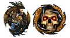
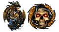

Index
 



Cliquez sur un jeu pour découvrir la liste des mods disponible pour lui.
Afin que ces listes soient les plus précises possibles, n'hésitez pas à indiquer sur le forum si de nouvelles traductions sont en cours, sont nouvellement achevées ou sont provisoirement mises de côté (avec la possibilité ou non pour un autre traducteur de les reprendre à son compte). N'hésitez pas également à signaler tout problème, tout lien mort ou plus récent, confirmer de nouvelle compatibilité, ou tout simplement la sortie de nouveaux mods, même non-traduits.
Quiconque le souhaite peut apporter des modifications et des améliorations à ces listes sur ce compte GitHub.
Légende des mods :
- ❎ : mod ne nécessitant pas de traduction.
- ✅ Bleu : mod traduit et à jour.
 Vert : mod en cours de traduction.
Vert : mod en cours de traduction. Rouge : mod traduit, mais nécessite une mise à jour ou une "traification".
Rouge : mod traduit, mais nécessite une mise à jour ou une "traification".- ❌ : mod à éviter ou obsolète.
- ⚠️ Attention : mod posant problème.
• HAUT DE PAGE